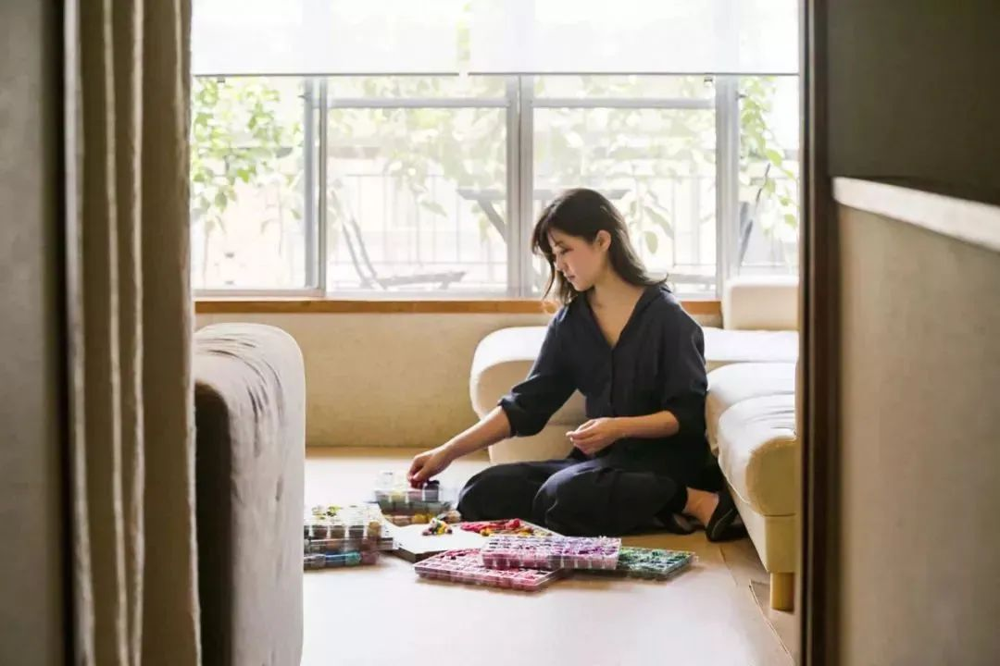
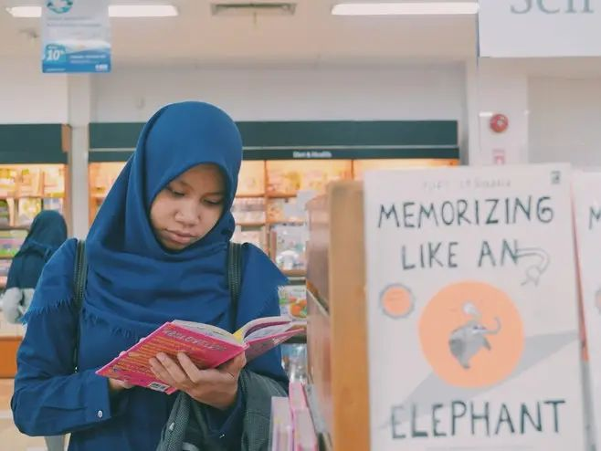
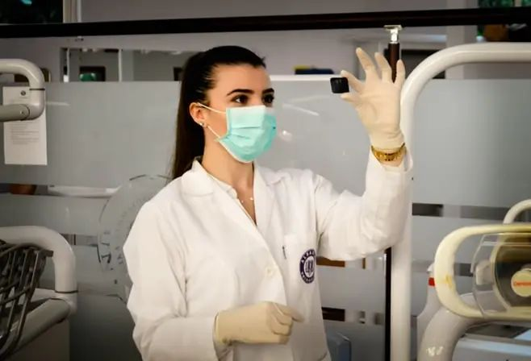
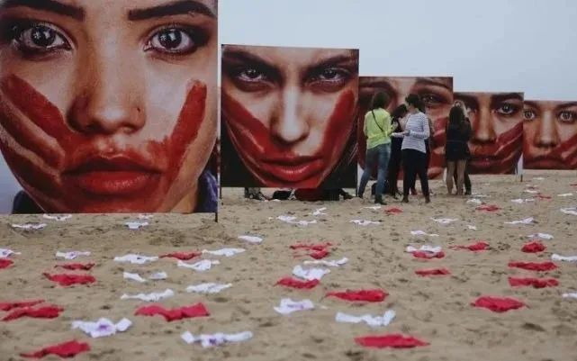
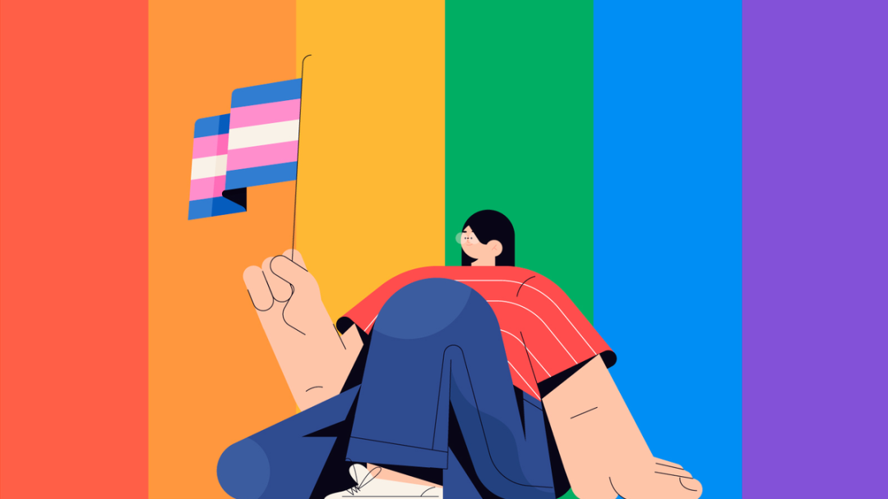
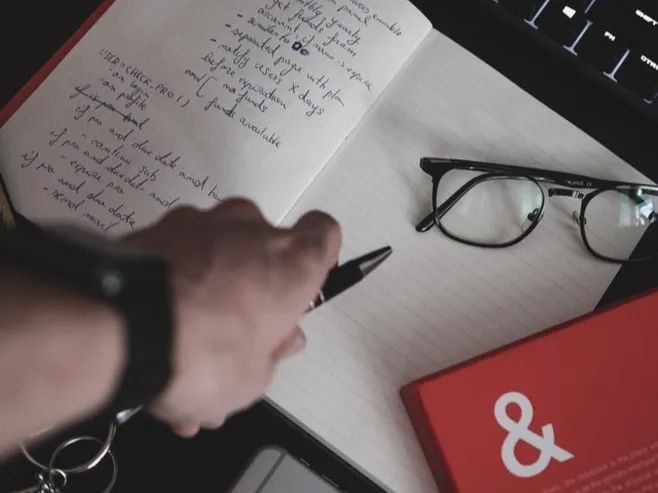
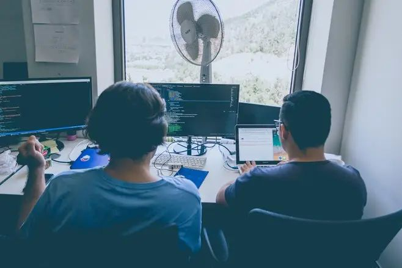

海外4月刊｜使用中性词让语言更加平等

编辑 | 朝酒
翻译 | ABB，桃子，灰灰，Xiao，利虎，沅沅
数据支持 | 楼楼
特别感谢 | 北风儿，paper，hurrah
其实在日本，民众曾有共鸣，有一种职业叫家庭主妇，妻子在家庭中的付出和劳动。维系人际关系。常常放弃自己原本的职业，从而转战家庭。
大多少女性如此选择的原因是女性生育休产假等状况，使企业对于选择雇佣存顾虑，以及关系到育儿和赡养老人。
在经济等资源有限的情况下，妻子开始“全职化”。由此越来越多日本主妇整理收纳法，史上最强清洁攻略等风靡网络。

但是引申到现在日本社会背景，世界经济论坛的性别差距报告中，日本被认为平等化进程处于原地踏步状态。
来源：朝日周刊，翻译：ABB
【印度 04.02】印度拉贾斯坦邦是一个落后保守的地区，这里的女性不论宗教信仰都有穿全身罩袍的传统。拉贾斯坦邦总理Gehlot最近开始了一项“摘下面纱”运动，他将禁止女性投票选举时佩戴面纱。
“我们希望当政府开始倡导摘下面纱时，人们的接受程度会高一点”，一位负责妇女儿童发展的当地官员说。政府机构的健康工作人员已经开始不带面纱出现在各个乡村。

虽然这个运动目前主要针对印度教女性，当地的伊斯兰教组织已经警告政府不要试图改变宗教传统。
来源：卫报
▲ 民间传统不是性别歧视的借口。
为对抗新冠病毒，英国政府敦促成千上万名退休护士重返工作岗位，并呼吁招募新护工来填补患病或在自我隔离中的员工空缺。其中，89％的护士和84％的护理人员是女性。
然而，女性在此高危行业中极高占比的显著性很可能会被削弱。最新数据显示，与男性相比，女性在该病毒检测中呈阳性的可能性更小，死亡的可能性也更小。在意大利，男性占死亡人数的71%，而在西班牙，男性死亡人数达到女性的两倍。

来源：卫报，翻译：桃子
▲是时候为她们所做的工作支付应当的报酬，并支持、重视和保护这些工作人员。
早前，家暴防护者发出警告封锁限制会加剧家庭紧张关系，并切断逃生路线。
一位不愿透露姓名的女士Tara告诉BBC，她已经遭受丈夫对其精神的和身体的暴力长达6个月，封锁政策之后情况变得更加糟糕。暴力经常是很隐秘的，微妙的，不易被外人发觉的，比如“切断我和家人朋友的联系，无时无刻不疑心我在欺骗他，删除我的社交软件，不让我去看父母，精神的，语言的，身体的虐待和攻击，无休无止。我并不期待活着看到第二天早上的太阳，因为我清楚第二天会发生什么，我只想让时间快点过去。从起床开始他就没事找事，如果我反击，他就会打我”。这位女士现已被保护机构Refuge救助，目前已在威尔士的庇护所。
另外一位受害者Rachel Williams遭受了丈夫长达18年的控制，当她说要离开她的丈夫的时候，他用一把短猎枪射向她。
Refuge的主任Sandra Horley表示，去年英格兰和威尔士共有160万的女性遭受家暴，在病毒肆虐期间，由于封锁和自我隔离，妇女和儿童面临着被家暴和限制自由的巨大风险。
“家庭暴力不只是身体上的，它是一系列的控制行为，包括威胁、强制等，会造成情绪、经济、心理、性等多方面的创伤。我们永远无法阻止家暴者，除非我们时刻都能看到他。家暴永远无法根除，何况我们现在的首要关注是病毒。”

Refuge强调，求助热线依旧会每周7天24小时在线，工作人员会在家为大家服务。
封锁使受害者不仅变得更加易受伤害，而且很难寻求帮助。因此国家家暴热线提供了网络求助服务，即使没有电话记录，只要点击官方网页的一个按钮就可以求助。
对Tara来说，虽然封锁让她不得不24小时和丈夫呆在一起，使其处境变得更加糟糕，但封锁也使她下定决心一定要永远得逃离这段关系。
来源：BBC，翻译：灰灰
原标题：Coronavirus: Domestic abuse calls up 25% since lockdown, charity says
By June Kelly and Tomos Morgan, 6 April 2020
#家庭暴力，零容忍#
使用“我为什么没有发声”的标签，女性们和一些男性开始讲述他们在家中或在公共场所忍受过的侮辱和虐待，但却因为感到羞耻或害怕受到责备而没有向权威机构进行报告。
沙特阿拉伯近期进行了大规模的改革，禁止家庭暴力及性骚扰，此举也结束了持续数十年的餐厅中的性别隔离以及禁止女性驾驶的规定。
但人权组织表示，选择用法律手段维护自己权利的女性依然在社交媒体上遭到抹黑，并且因为遭遇性骚扰被他人谴责。
一个名叫Bella的沙特推特用户写道：“当我的朋友报告被侮辱虐待的事情之后，她们经历了更大的伤害”。
在这一体系中，如果违背他们的监护人（通常是丈夫或父亲）的管控，她们仍然可能面临被逮捕的风险。
一个名叫Udor的女性推特用户写到，她在被父亲殴打、赶出家门并向警察报告她的违抗行为之后被捕。
一个处理家庭暴力的沙特政府机构使用“我为什么没有发声”这个标签来敦促遭遇虐待的人们私底下与他们进行联系。
一些女性说她们害怕发声，尤其当施暴者就是她们的家庭成员。一个名叫Catolina的推特用户写道：“我报了警，可是警察劝我放弃控诉，而施暴者当时就和他们坐在一起。”
根据人权监察组织的调查，沙特女性在没有男性监护人现身的情况下，很难得到社会服务，一些寻求庇护的女性依然需要得到男性亲属的准许才能离开避难所。
有一些获得关注的案例聚集了诸多反对男性监护体系的声音，比如，2019年18岁的Rahaf Mohammed al-Qanun逃至加拿大，离开了据她所说的虐待她的家庭。
来源：路透社 ，翻译：Xiao
【印度尼西亚 04.15】印度尼西亚一名跨性别女性被淋上汽油后放火烧死，警察在逮捕嫌疑人之后，称这起暴行不属于“故意杀人罪”，属于“伤害致死罪”，引起广泛批评。人权组织和性少数群体评判说，这是一起明显带有杀意的卑劣的杀人事件。

印度尼西亚是一个多民族、多语言、多宗教的国家。尽管国家一直在倡导包容性和多样性，但近年由于伊斯兰教中强硬派教徒的数量众多，价值观根深蒂固，而屡屡产生摩擦。
来源：雅虎日本
去年12月任职的费尔南德斯在竞选总统期间就曾表示对于西语改革的支持。他的竞选口号中的”todos”（所有人）就使用太阳标志代替了表示词语阳性的”o”。他上任后不久，许多政府部门也开始使用中性的表达方式。比如养老金系统就为其所有员工发放了一份包容性语言使用手册。
总统在这次公共危机中再次选择使用中性词，更说明了西语改革运动正在阿根廷掀起巨浪，背弃了西班牙语长久的语法和使用习惯，从而让语言更加平等而具有包容性。
虽然让西语更加平等的运动不局限于阿根廷，但令阿根廷与众不同的是，不仅仅活动家和平权主义者开始使用中性的语言，学术界和政治界也开始渐渐改变他们的表达方式。

但是阿根廷语言学教授 Santiago Kalinowski 认为，支持西语改革的平权主义者故意选择了不符合语法规则的人造词，导致这个改变更引人注目。“这个改革的目的和语法无关，而和政治和社会有关。西语改革是为了改变语言创造的文化，并最终改变法律”。
来源：纽约时报，翻译：利虎
【日本 04.23】大阪市长松井一郎在23号的市政府记者会见上称，让男性去超市购物更能避免“三密”（密闭空间，密集场所、密切接触）。
在我家，妻子去买东西的话，会在意商品质量好不好，拿起来好多商品做对比，导致花费很长时间。我家的话，我去会更快一些。不会管商品怎么样，会直接去放到篮子里结账，然后回家。”
在益普索（Ipsos）最近的一项调查中，征求了27个不同国家的男女意见，认为在工作场所哪些行为可以接受，哪些因素可能对其职业产生不利影响。调查显示，四分之三的女性认为赞美另一名女性的外表和衣着是可以接受的，而只有三分之二的男性认为这是正确的。女性也更容忍拥抱哭泣的同事作为安慰。而在允许在工作场所讲性别歧视故事或一次又一次尝试邀请曾经拒绝的同事时，男性更能容忍。
在世界范围内，有71％的受访者认为在工作场所讲性别歧视的笑话是不可接受的，而在匈牙利人中，这一比例仅为61％，而31％的接受者则认为是可以接受的。按性别来看，只有22％的匈牙利妇女认为这是可以接受的，而41％的男性认为这是可以接受的。
在匈牙利，有76％的受访者认为拥抱正在哭泣的同事是可以接受的，世界上只有71％的受访者认为是可以的。有趣的是，弱者并不是最宽容的：匈牙利女性中81％的人接受舒适拥抱，而男性中71％的人接受舒适拥抱。
·家庭与事业
益普索还评估了不同因素对男女职业产生不利影响的程度。根据受访者的说法，总的来说，女性比男性更容易遭受不利影响，无论是将家庭放在首位而选择打零工，还是与同事的关系，甚至是工作以外的业余爱好方面。
由于除了工作，女性还要承担更多的家庭责任，35％的受访者认为女性会受到更多的不利影响，而8％的受访者则认为男性更有可能受到不利影响。在打散工方面，15％的受访者认为女性处于劣势，10％则认为男性处于劣势。
在这个问题上，也有必要研究世界意见与匈牙利意见之间的区别。一般而言，匈牙利人认为上述因素对男女的职业危害较小。如果员工无法或不愿意在工作时间以外工作、加班，或者把家庭置于工作之前，员工才处于不利地位。
此外，还对受访者进行了评估，以确定该国的雇主是否平等对待男女。在全球范围内，有41％的受访者表示，他们完全或更多地同意在自己的国家平等对待这两种性别，而56％的受访者则不同意。
在匈牙利，情况更糟，只有36％的人认为在工作场所男女待遇平等，有61人不同意这一说法。这个比率对我们来说几乎和美国一样糟糕，而法国和日本人甚至更少认为他们将拥有平等。有趣的是，中国，印度和俄罗斯在说两性平等的人中也有较高的比例，但在欧洲大多数接受调查的国家中却没有。
在匈牙利，尽管平均有36％的人认为两性一视同仁，但其中女性的回应率平均为26％，男性为46％。在全球范围内，男女之间的意见差异并不存在，比例为32：49。
来源：Pénzcentrum，翻译：沅沅
▲ 在男女平权方面，我们还有很长的路要走。
英国医学协会顾问委员会副主席Helen Fidler博士说“女性的健康安全无疑因为不合身的防护服受到了极大的威胁。医用口罩是以男性面部结构为模版设计的，但讽刺的是，NHS75%的工作者是女性。”
然而，女医务人员之间，依然有很多人不愿意抱怨，仿佛宽大的防护装备是她们必须忍受的现实。然而Helen Fidler博士认为，这是不可接受的，“我们不应该通过一个全球性流行病才能认识到问题的严重性。政府有道德和法律责任尽快解决这件事情。“
来源：the Guardian，翻译：利虎
药物堕胎在2000年被首次通过，并正在逐渐成为女性堕胎的首选。近期的调查显示在允许药物堕胎的情况下（孕期10周内），60%的女性选择使用堕胎药。只有在极少数情况下，服用堕胎药的女性可能发烧、感染或者大出血，并需要医疗处理。
食品药品监督管理局要求美服培酮只能由拥有特殊资格证的医务人员配药，但是并没有要求病人当面就诊。截止4月22日，TelAbortion一共寄出了841个含有堕胎药物的包裹，并完成了611次药理堕胎。他们显著的成果让共和党近期起草了禁止远程医疗堕胎的法案。
来源：纽约时报，翻译：利虎

“暴力骚扰”指因怀孕、生育的理由被解雇、降级、猥亵等。2015年怀孕后降级违反了男女雇佣机会均等法，这一法院判决引起了人们的关注，当年的新语·流行语大赏top10中也有“暴力骚扰”上榜。
最后新闻工作者表示，在职场骚扰中，除了需要法律制度保障，同时人们在岗位上没有相互尊重的话，“〇〇骚扰”也没办法改变。
来源：推特，翻译：ABB
我们研究一下，在什么样的社会经济条件的影响下，可以说服更多的女性生育孩子。显然，可以借助详细信息来进行更深入的分析，但是也可以从可用信息中得出某些结论。
让我们看看政府的决定有多大影响。根据最新的可用数据，有99.3万名25至40岁的女性在劳动力市场上工作。尽管尚无关于其中有多少个母亲或尚未生育的数据，但可以简单估计一下，由于宣布的措施，有多少女性受到了要生孩子的压力。
根据中央统计局2016年的微观人口普查，年龄在25至35岁之间的人中有56％尚未生育，而年龄在35至44岁之间的人中有20％没有孩子。也就是说，如果我们假设这个比例在雇员方面也是正确的，那么在有工作的女性中有37.7万人在40岁以下且无子女。这相当于雇员总数的8.4％。
根据欧尔班（Orbán）的说法，如果能够实现7点行动计划，那么一个有3个孩子的家庭可以获得总计3750万福林（46福林=1RMB），而有2个孩子的家庭可以得到的2200万匈牙利福林的支持。
对于3个孩子的家庭来说，这意味着他们可以获得1000万福林的不用退还的补贴、家庭建房补贴（CSOK）和1500万福林的贴息贷款，用于购买新的和现在使用的公寓。同时还可以申请1000万福林的福利贷款，尽管总理没有说明该笔款项应该以什么目的申请。在3500万福林之外，还有250万福林的不用退还的购车补贴。此外三个孩子的家庭还有400万福林的抵押贷款，可以在国家支持下偿还。
如果所有可能的女性都充分利用了这些机会，那么所有这些将意味着超过11,000亿匈牙利福林，包括37.7万潜在生育女性，这令人震惊，我们估计其中有20万女性将生育两个孩子，而17.7万女性将生育三个孩子。
来源：mfor.hu，翻译：沅沅
▲ 女性的价值应该由自己决定。